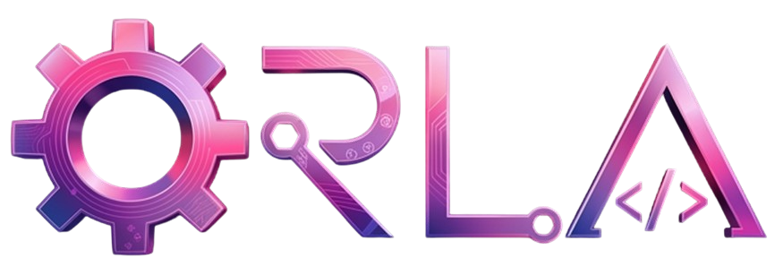
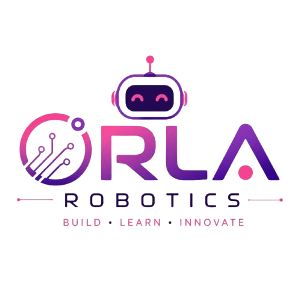

ORLA Robotics
Founded in 2026 as a separate robotics education venture. I teach two age groups (6–9 and 10–14) using Arduino, Python, LEGO Robotics, electronics and sensors.
Computer Science Graduate · Software Developer · Robotics Educator · Entrepreneur
Building meaningful solutions through code, creativity, robotics and entrepreneurship — from Palestine to wherever ideas can go.
I'm Ameera Faqeh, a 2026 Computer Science graduate of Birzeit University. My interest in technology grew from experimenting with computers, phones and electronic components into building software, working with AI, teaching robotics and founding technology ventures.
I enjoy turning ideas into practical solutions and making technology approachable for others. My goal: keep learning, keep building and create work that matters.
Hackathons, course projects, full-stack applications and hands-on engineering work. Visuals are illustrative, not actual screenshots.
Founded in 2026 as a separate robotics education venture. I teach two age groups (6–9 and 10–14) using Arduino, Python, LEGO Robotics, electronics and sensors.
Served as a judge in the Future Engineers category at the World Robot Olympiad competition held at Birzeit University.
Won first place among Birzeit University engineering students with an Arduino smart parking counter that displays when parking is full.

ORLA began in 2016 as a personal space for sharing software tips and technical knowledge on social media, then evolved into a specialized technical services business. I work on phone repairs, software issues, laptop services, electronics sales, account recovery and official activation-lock support after ownership verification.
Selected cases include an officially resolved iPhone 17 Pro Max activation-lock case and recovery assistance for disabled Instagram accounts. Outcomes depend on platform review and valid ownership evidence.

An independent educational initiative helping children explore robotics, coding, electronics and creative problem-solving through hands-on projects. Programs for ages 6–9 and 10–14.
Started sharing software and technical knowledge online in 2016, later developing ORLA Electronics into a technical services business.
Completed a Bachelor’s degree in Computer Science at Birzeit University in 2026.
Won first place among engineering students at Birzeit University with an Arduino-based smart parking counter that tracks vehicle entry and displays a full-capacity alert.
Achieved first place in a problem-solving competition at Birzeit University.
Represented Palestine / Birzeit in robotics competition participation and achieved second place at the local level.
Served as a judge for the Future Engineers category at WRO Palestine 2026, hosted at Birzeit University.
Founded an independent robotics education initiative for children aged 6–9 and 10–14, teaching Arduino, Python, LEGO Robotics, electronics and sensors.
Participated with Wasli, a peer-to-peer delivery concept connecting people travelling between Palestinian cities with people who need items delivered. Contributed UI/UX design and front-end prototype development.
Contributed to an emergency-reporting app prototype connecting witnesses with emergency responders. Responsible for concept research, UI/UX design and pitching.
Participated in the Create Apps Championship 2025–2026, an initiative associated with Dubai Chamber of Digital Economy and Create Apps in Dubai. Received an official Certificate of Participation recognizing my contribution to the championship.
Built and presented a working customer-message sentiment analysis project for Bank of Palestine, contributing front-end development and Figma UI/UX design. Presented to judges; no award claimed.
Completed the Tech Circles Mentorship program at Palestine Techno Park.
Completed smartphone maintenance and programming training at Knowledge Lights Center with a 96% result; certificate recognized by the Palestinian Ministry of Labor.
Completed Front End Web Developer, Full Stack JavaScript Developer, and AI Programming with Python & TensorFlow Nanodegrees.
Built a JavaFX airport check-in system using queue data structures.
Developed a student admission application using linked-list data structures.
Implemented a movie catalog using hash tables and AVL trees.
Built a library management application with JavaFX.
Designed an arithmetic logic unit (ALU) using Verilog.
Created shell scripts for system administration tasks.
Completed programs, professional training and attended technical sessions. Certificate images can be added later.
Open to collaborations in software, AI, robotics education and creative technology.
faqehameera5@gmail.com ↗